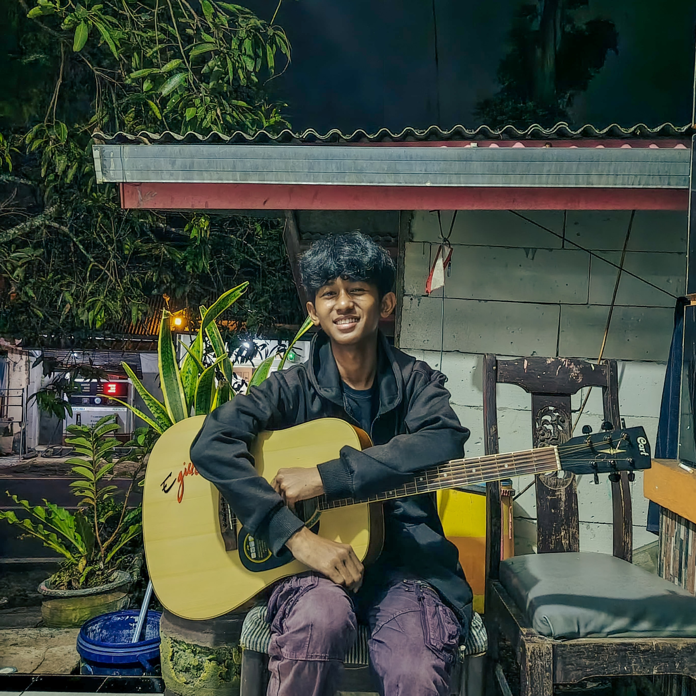

Muh Geris Wiruno Mandawa
Siswa kelas 12. Belajar web development dengan membuat hal kecil yang berguna.
- Web developer
- Peminat AI
- Gitaris dan vokalis
- Pelajar trading dan investasi
github.com/wiruu31
Proyek
Semua proyek ini berjalan di browser dan bisa dibuka langsung.

Tentang
Halo, aku Muh Geris Wiruno Mandawa, biasa dipanggil Geris atau Wiru. Aku siswa kelas 12 yang suka mengutak-atik kode dan membuat hal-hal kecil yang berguna. Buatku, cara belajar paling seru adalah langsung membuat sesuatu, salah, lalu memperbaikinya.
Saat ini aku fokus memperdalam web development dan bereksperimen dengan AI, sambil terus belajar dasar-dasar ekonomi, trading dan investasi. Di sela-selanya, gitar akustik jadi cara favoritku untuk istirahat.
Minat
- Web development
- Programming
- AI
- Gitar akustik
- Bernyanyi
- Ekonomi
- Trading dan investasi
Kemampuan
Level adalah penilaian dari diriku sendiri, dan terus naik.
Kontak
Ngobrol soal kode, AI, musik, ekonomi, atau investasi. Atau tukar ide dan kolaborasi.
- GitHub github.com/wiruu31 (tab baru)
- Instagram @gerswiruno_ (tab baru)